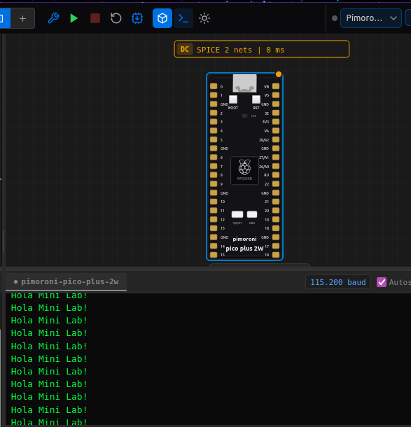

Comunicación serial
Entendé para qué sirve UART y cómo puede utilizarse para enviar información desde un microcontrolador.
Tutorial 01 · Nivel inicial
Enviá tu primer “Hola Mini Lab” desde el microcontrolador y observá cómo un sistema embebido puede enviar información hacia el exterior. Podés realizar la actividad en Velxio mediante UART0 o utilizar una Raspberry Pi Pico 2 real comunicándote directamente por USB.
Antes de trabajar con sensores y actuadores, vamos a comprobar que nuestro firmware puede comunicarse con el exterior.
Entendé para qué sirve UART y cómo puede utilizarse para enviar información desde un microcontrolador.
Configurá UART0 con TX, RX y una velocidad de 115200 baudios para utilizarlo como medio de comunicación serial dentro del simulador.
Mandá texto desde Rust y comprobá el resultado utilizando el Serial Monitor.
Vamos a continuar desde el proyecto que preparaste en Primeros pasos.
Elegí tu entorno
El objetivo es el mismo en ambos recorridos. Lo que cambia es la forma en la que el microcontrolador envía la información.
En Primeros pasos modificamos el proyecto para comprobar que el entorno, el LED y la comunicación serial funcionaban correctamente en Velxio.
Ahora vamos a retirar ese código de prueba y
construir cada ejemplo paso a paso. No hace
falta crear un proyecto nuevo: vamos a
seguir trabajando sobre el mismo
src/main.rs.
Primero sacá el import que utilizábamos para controlar una salida digital:
use embedded_hal::digital::OutputPin;También eliminá la creación del pin que utilizábamos para controlar el LED:
let mut led_pin = pins.gpio15.into_push_pull_output();Como vamos a volver a configurar UART desde cero, eliminá también la configuración que agregamos durante Primeros pasos.
let uart_pins = (
pins.gpio2.into_function(),
pins.gpio3.into_function(),
);
let uart0 =
hal::uart::UartPeripheral::new(
pac.UART0,
uart_pins,
&mut pac.RESETS,
)
.enable(
UartConfig::new(
115200.Hz(),
DataBits::Eight,
None,
StopBits::One,
),
clocks.peripheral_clock.freq(),
)
.unwrap();
Por último, eliminá el loop de
prueba que prendía y apagaba el LED y enviaba
mensajes al Serial Monitor. En unos pasos vamos
a reemplazarlo por el código propio de este
tutorial.
loop {
info!("on!");
led_pin.set_high().unwrap();
uart0.write_full_blocking(b"LED ON\r\n");
delay.delay_ms(500);
info!("off!");
led_pin.set_low().unwrap();
uart0.write_full_blocking(b"LED OFF\r\n");
delay.delay_ms(500);
}También podés retirar temporalmente los imports de UART que agregaste en Primeros pasos. Los vamos a incorporar nuevamente cuando configuremos la comunicación.
use rp235x_hal::fugit::RateExtU32;
use rp235x_hal::uart::{DataBits, StopBits, UartConfig};La comunicación serial permite enviar información como una secuencia de datos entre dispositivos. Existen distintas formas de implementarla. En esta versión del tutorial vamos a utilizar UART, un periférico del RP2350 que dispone de una línea para transmitir datos (TX) y otra para recibirlos (RX).
Primero necesitamos importar los tipos que utilizaremos para configurar la comunicación.
Agregá estos imports al comienzo de
src/main.rs:
use rp235x_hal::fugit::RateExtU32;
use rp235x_hal::uart::{DataBits, StopBits, UartConfig};Después de inicializar los pines del proyecto, agregá la configuración de UART0:
let uart_pins = (
pins.gpio2.into_function(),
pins.gpio3.into_function(),
);
let uart0 =
hal::uart::UartPeripheral::new(
pac.UART0,
uart_pins,
&mut pac.RESETS,
)
.enable(
UartConfig::new(
115200.Hz(),
DataBits::Eight,
None,
StopBits::One,
),
clocks.peripheral_clock.freq(),
)
.unwrap();Ya tenemos UART configurado. Ahora vamos a utilizarlo para enviar nuestro primer texto.
Hacé que el microcontrolador escriba “Hola Mini Lab!” en el Serial Monitor.
loop {
uart0.write_full_blocking(b"Hola Mini Lab!\r\n");
delay.delay_ms(1000);
}Guardá los cambios y compilá nuevamente el proyecto en modo release.
cargo build --releaseCargá el nuevo ELF en la Pimoroni Pico Plus 2 W y ejecutá la simulación.
Usá File → Upload Firmware y seleccioná el ELF que acabás de compilar.

Hola Mini Lab! al Serial
Monitor.
Abrí el monitor serial de Velxio mientras el firmware está ejecutándose.
Deberías ver una salida similar a:
Hola Mini Lab!
Hola Mini Lab!
Hola Mini Lab!
Hola Mini Lab!
...Antes de configurar USB CDC, retiraremos el código de prueba utilizado en Primeros pasos. Eliminá la configuración de UART0, el LED conectado a GPIO15 y el loop que alternaba el LED y enviaba mensajes.
En la Raspberry Pi Pico 2 no vamos a utilizar UART para comunicarnos con la computadora. Vamos a usar directamente el puerto USB de la placa mediante USB CDC.
Agregá las dependencias necesarias para crear el dispositivo USB serial:
usb-device = "0.3.2"
usbd-serial = "0.2.2"El RP2350 dispone de un periférico USB integrado. Vamos a utilizarlo para que la Pico 2 se presente ante la computadora como un puerto serial.
Agregá estos imports:
use usb_device::{class_prelude::*, prelude::*};
use usbd_serial::SerialPort;Después de configurar los clocks, creá un temporizador:
let timer = hal::Timer::new_timer0(
pac.TIMER0,
&mut pac.RESETS,
&clocks,
);Ahora inicializá el periférico USB y el puerto serial:
let usb_bus = UsbBusAllocator::new(
hal::usb::UsbBus::new(
pac.USB,
pac.USB_DPRAM,
clocks.usb_clock,
true,
&mut pac.RESETS,
),
);
let mut serial = SerialPort::new(&usb_bus);Ahora creamos el dispositivo USB y definimos la información con la que aparecerá ante la computadora.
let mut usb_dev = UsbDeviceBuilder::new(
&usb_bus,
UsbVidPid(0x16c0, 0x27dd),
)
.strings(&[
StringDescriptors::default()
.manufacturer("Fundacion INVAP")
.product("Mini Lab USB Serial")
.serial_number("MINILAB01"),
])
.unwrap()
.max_packet_size_0(64)
.unwrap()
.device_class(2)
.build();
Igual que en Velxio, vamos a enviar
Hola Mini Lab! una vez por
segundo.
let mut last_message = 0;
loop {
usb_dev.poll(&mut [&mut serial]);
let now = timer.get_counter().ticks();
if now - last_message >= 1_000_000 {
last_message = now;
let _ = serial.write(
b"Hola Mini Lab!\r\n",
);
}
}
Con la placa conectada por USB, utilizamos
picotool para cargar y ejecutar
el firmware.
Configurá picotool como runner
del proyecto:
runner = "picotool load -u -v -x -t elf"Después ejecutá:
cargo run --releaseCuando el firmware comience a ejecutarse, Linux debería detectar la Pico 2 como un dispositivo serial USB.
sudo cat /dev/ttyACM0Deberías ver:
Hola Mini Lab!
Hola Mini Lab!
Hola Mini Lab!
...Desafío final
Modificá el programa para que el microcontrolador envíe un mensaje diferente al Serial Monitor.
Podés incluir tu nombre, cambiar el texto o enviar dos mensajes distintos.
Ya enviaste información serial desde un firmware Rust utilizando UART0 en Velxio. En el siguiente tutorial vas a comenzar a controlar una salida GPIO con un LED.